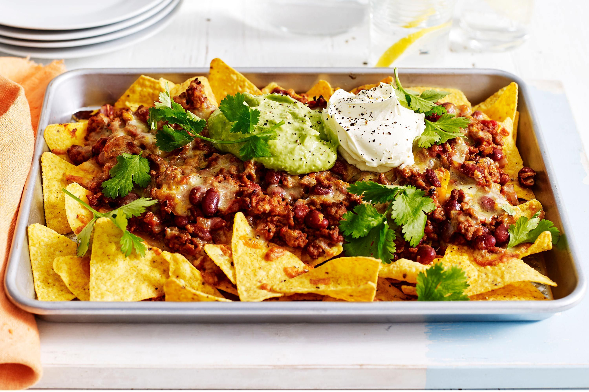

Nachos

Ingredients
- 175g packet plain tortilla chips
- 225g jar salsa
- a few sliced spring onions
- a good chunk of cheese
- a pinch of crushed chilli flakes
- sour cream or guacamole (optional)
Instructions
- Tip tortilla chips on to a baking tray, pour over salsa and scatter over a few sliced spring onions
- Grate over a good chunk of cheese (fontina is perfect, but cheddar will do).
- Add a pinch of crushed chilli flakes, then put under a hot grill for about 3 minutes to melt the cheese.
- Serve with soured cream or guacamole (optional)
Go back